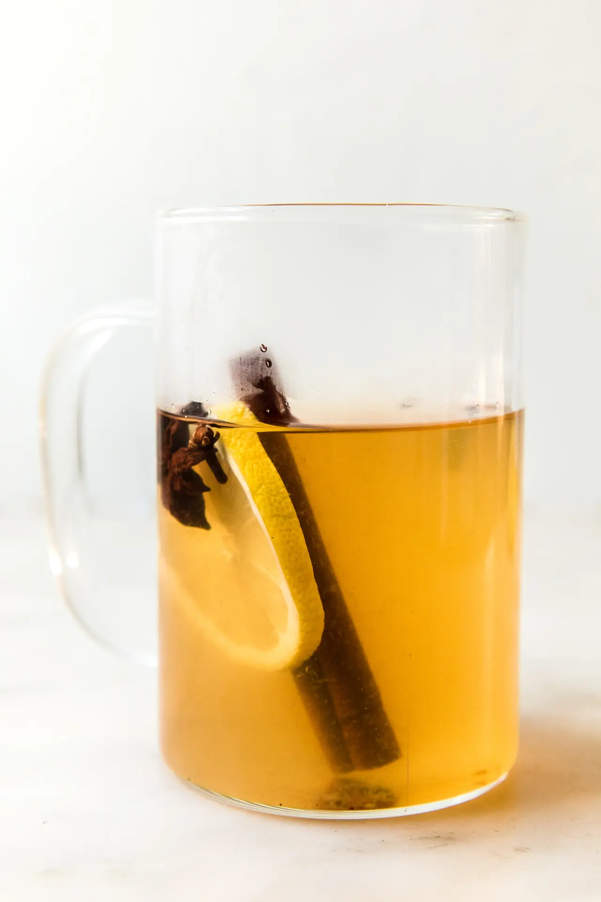

Hot Toddy

Description
A warming cure for what ails you, or simply to see you through a cold winter night
Ingredients
- One shot scotch whisky
- 1tsp freshly squeeze lemon juice
- 1tsp runny honey
- Three dried cloves
- One cinnamon stick
- 50ml boiling water
How to make
- Pour the whisky, lemon juice and honey into a mug
- Stir
- Add the cinnamon stick and cloves
- Pour the boiling water into the mug
- Stir again
- Garnish with a slice of lemon